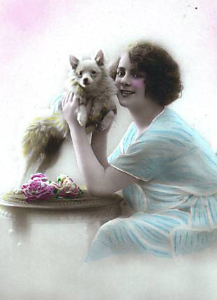

---

 Шпиц
---
<table class="layout" border="0">
     <tbody style="text-align: left;">
         <tr style="text-align: left;">
             <td style="text-align: left;" valign="top">
             <div class="holster">
             <div class="block_container s3 b-text b-static-text user_css_12816005438" id="e_127780596571">
             <p style="text-align: center;"></p>
             <p style="text-align: center;">Наши заводчики:</p>
             <p style="text-align: center;"><em><strong>Поплавская Елена Владимировна - </strong></em></p>
             <p style="text-align: center;"><em><strong>питомник <a href="http://www.spitz-vesgnom.ru">"Весёлый гном"</a></strong><strong>&nbsp; <br />
             </strong></em></p>
             <div style="text-align: center;"></div>
             <p style="text-align: center;">тел.8-916-5010433</p>
             <p style="text-align: center;"> </p>
             <p style="text-align: center;"><strong>Хают Ирина - </strong></p>
             <p style="text-align: center;"><strong><a href="http://puremagic.ru/">"Пьюр Мейджик"</a>&nbsp;</strong><strong> </strong><a href="http://puremagic.ru/"><strong><br />
             </strong></a></p>
             <p style="text-align: center;">тел.:(495) 311-66-74</p>
             <p style="text-align: center;"> </p>
             <p style="text-align: center;"><strong>Шейченко Анна</strong></p>
             <p style="text-align: center;"><strong><span style="color: #0000ff;">"Sophie*s Jem"</span></strong></p>
             <p style="text-align: center;">тел. 8-906-0322961</p>
             <p style="text-align: center;"><strong>Кузнецовы Евгения и Владимимр-</strong></p>
             <p style="text-align: center;"><a href="http://salsapom.com/"><strong>" SALSAPOM"</strong></a></p>
             <p style="text-align: center;">тел. 8-916-9007268, 80916-6882437</p>
             <div style="text-align: center;"></div>
             <p style="text-align: center;"><strong>Рудницкая Эльвира Вячеславовна</strong></p>
             <p style="text-align: center;"><strong><span style="color: #0000ff;">"Элверпом"</span></strong></p>
             <p style="text-align: center;">тел.8(909)164-88-66, elverpom@yandex.ru</p>
             <p style="text-align: center;"><a href="http://http//spitz-vesgnom.ru/"><br />
             </a></p>
             </div>
             <div class="block_container s3 b-image txt-center" id="e_128281781891">&nbsp;</div>
             </div>
             </td>
             <td style="text-align: left;">
             <div class="holster">
             <div class="block_container s3 b-text b-static-text user_css_12816005438" id="e_12828176446">
             <p style="text-align: center;"><span style="color: #006600;"><span style="color: #0000ff;"><strong>Шпиц<a href="http://smayliki.ru/smilie-281876295.html" target="_blank"></a>&nbsp;&nbsp;&nbsp; <br />
             </strong></span></span></p>
             <p style="text-align: justify;"><strong>Шпицы</strong> &#8211; очень древние представители собачьего мира, но за долгие годы существования и формирования породы, интерес к этим замечательным собакам не только не ослаб, как это случилось со многими породами, но он возрастает с каждым годом. Шпиц занимает одно из ведущих мест по популярности в мире. В чем же секрет успеха шпицев? Обратимся к стандарту породы.</p>
             <p style="text-align: justify;"><strong>Страна происхождения: Германия</strong><br />
             <strong>Использование:</strong> охранная собака и собака &#8211; компаньон.</p>
             <p style="text-align: justify;"><strong>Поведение и характер:</strong> Немецкий шпиц постоянно во внимании, живой и необычайно привязанный к своему владельцу. Он очень понятливый и легко обучается. Его недоверчивость к посторонним и отсутствие у него охотничьего инстинкта, делают его идеальным охранником дома и двора. Он не боязлив и не агрессивен. Устойчивость к непогоде, прекрасное здоровье и долголетие являются его выдающимися качествами.</p>
             <p style="text-align: justify;">Необыкновенная красота и прекрасный позитивный характер этих собак сделали породу одной их самых поулярных в мире.</p>
             <p style="text-align: justify;">Разнообразие размеров и окрасов дают прекрасную возможность подобрать подходящего любимца.</p>
             <p style="text-align: center;"><a href="http://spitz-vesgnom.ru/index.php/standart/">СТАНДАРТ ПОРОДЫ "НЕМЕЦКИЙ ШПИЦ".</a></p>
             <p style="text-align: justify;"> </p>
             </div>
             </div>
             </td>
         </tr>
     </tbody>
</table>
&#8203;
